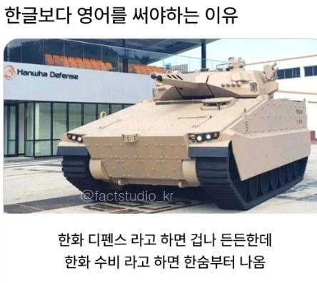

https://bbs.ruliweb.com/best/board/300143/read/76679434

https://bbs.ruliweb.com/best/board/300143/read/76679434

존나 쎄보인다.. ㄷㄷㄷ
근데 레드팀같애
남조선이니까 블루야
이름이 남조선을 폭파하기 위한 집단같아서 ㅋㅋㅋㅋ
그치 북침이 맞지
스읖북침 하고싶어지네????
할래?
할래말래?
성공하면?
최민식이야..?
여기 댓글 단 애들 최소 30대 이상같다..
한화 가디언
물건 잘못만들면 수비드라고 놀림받음
뭔 계피가루는 촌스럽고
시나몬가루은 세련된 느낌이라는건가?ㅋ
야구드립임. 한화 야구 수비가 답이 없다는거
근데 세련되 보이려고 그렇게 부르는게 아니라 계피라고 부르는거랑 시나몬이라 부르는 계피쪽은 종류랑 쓰임이 달라서 구분지으려고 하는것도 있음
한때 인터넷에서 "계피가 시나몬인데 계피라 하면 없어보이고 시나몬이라 하면 있어보이잖아 ㅉㅉㅉ" 했었는데
몇년전엔가? 실제로는 계피랑 시나몬이 다른거라고 하는 글도 있었음
이제와서보면 욕먹은 여성분 억울할듯. ㅋ
종이 좀 달라서 그렇게 하는 것도 있음
근데 계피랑 시나몬은 다른 거긴 해 맛도 다름
박하랑 민트도 다름. 그래서 민트티 생각하고 박하차 먹으면 머리에 갈고리 생김
한약방에서 쓰는 계피는 중국 계피(Cinnamomum cassia), 커리 등에 쓰는 시나몬은 실론 계피(Cinnamomum verum) 라서 같은 속에 속하는 다른 종임. 비슷하지만 다른 종류라서 용도에 따라 가려서 써야 함.
나 향신료 교양서에서 봤는데
조선시대에도 계피랑 육계(시나몬)이랑 섞어쓰면 존나 욕먹었다고함.
육계는 수입산 약재라서 비싼데 계피는 싸니까.
엄연히 약효도 다르고
완전다른거구나 오늘도 커뮤로 지식 배움ㅋㅋ
계피는 계피사탕 맛이고 시나몬은 달달함
계피와 시나몬은 다른 나무입니다.........
계피랑 시나몬은 구분할 이유가 있긴 함
동북아나 베트남 계피 특히 베트남은 단맛은 거의 없고 ㅈㄴ 맵거든
유럽쪽 계피(시나몬)은 달고
미묘하게 품종차이가 있음
계피랑 시나몬은 품종이 다름.
와사비와 고추냉이같은 관계임.
한국인과 조선족?? 아니면 북한사람???
영어때문 맞지?
아..
K-2 매뉴얼은 영어로 안써서 욕먹고 있는데
이건 공놀이 동호회가 잘못했다
프로호소인들 해체해라
한화 수비하면 막 9번연속지고 그럴것 같음
막 행복해질 것 같고
채!강!화!나! ㅠㅠ
한화공격은??
매섭긴해 ㅋ
쏘는데 하나도 안맞는 그런 거 아닐까
방위 라는 단어도 있어. 수비가 아니라.
한화 방위 산업
ㅋㅋㅋㅋㅋㅋㅋㅋㅋㅋㅋㅋㅋ
한화 디펜스가 든든해서 류뚱이 잘했구나!
나~는 행복합니다~! 나~는 행복합니다~!
남조선 폭파집단 모델명 방어
일단 둘이 포수부터가 다름 ㅋㅋ
'남조선폭파집단'